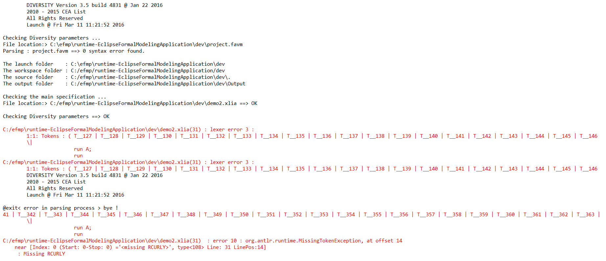

Both processes P and Q are evaluated from the initial context. If both terminate, there will be at least two execution paths, showing the indeterminism.
Considering 2 processes : P and Q, with non-determinism, each is evaluated from the initial context. If both terminates, at least two executions paths will be taken into account.
Applying this on our most basic example, the "@moe:" section looks like :
UNFORTUNATELY ON THE 2016/02/11 THE "|/\|" scheduling DOES NOT WORK FOR THIS PARTICULAR CASE OF BASIC EXAMPLE. ERROR MESSAGES APPEAR WHEN LAUNCHING THE SYMBOLIC EXECUTION :
